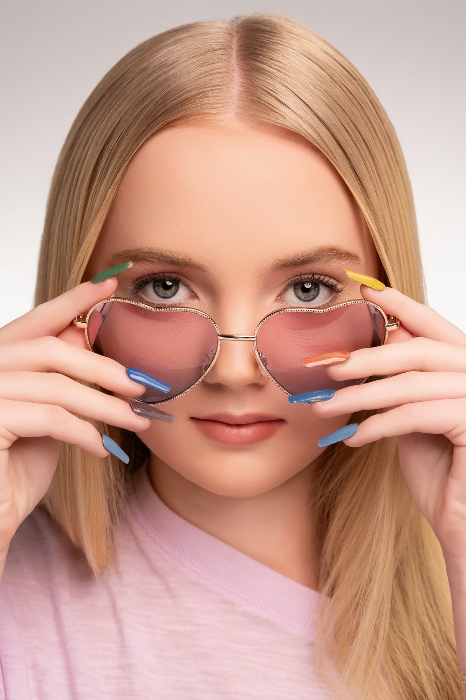

Omar Grant delivers fierce, fashion-forward designs to enhance the aesthetics and possibilities of next generation wearable micro, and nano, technologies!
Our StoryiPolish® adaptive fashion products are capable of changing to hundreds of rich colors and unique tones – a nearly endless selection for you to enjoy… in style!
See iPolish® in action